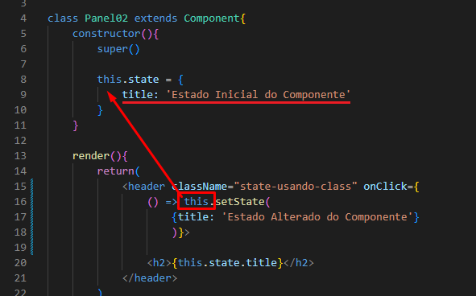
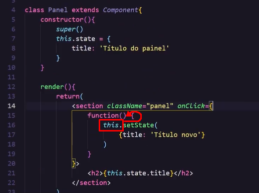

Abaixo, vemos que o this que está dentro da Arrow-Function, alcança os dados que estão dentro do constructor e os mostra dentro do h2.

Porém, abaixo, vemos que o this que está dentro de uma simples Function, tem seu escopo alterado e o this alcança apenas a sua própria função e como não há nenhum parâmetro dentro da função, ele retorna undefined pro h2 que então retorna um erro fatal, encerrando minha aplicação.
